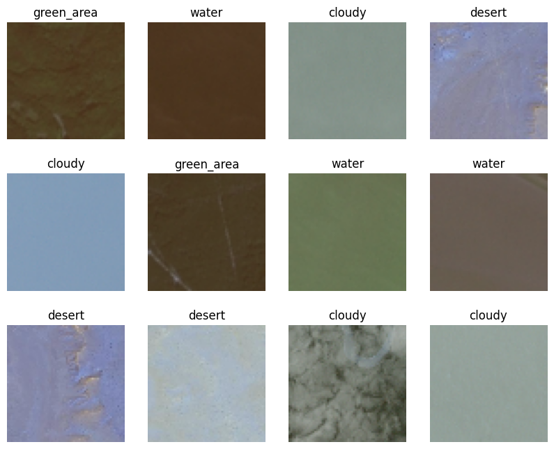
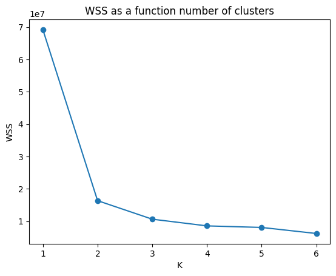
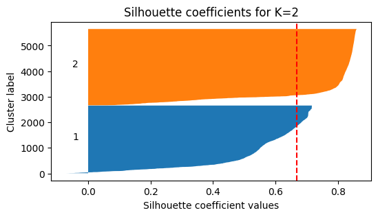
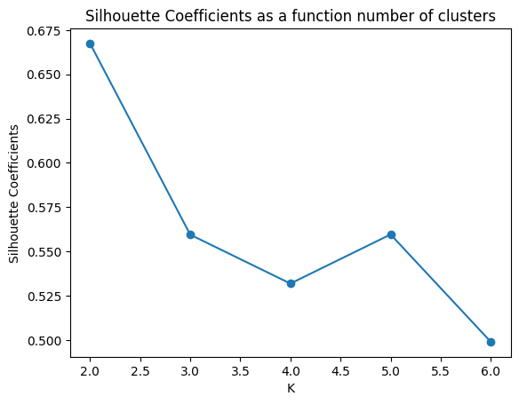
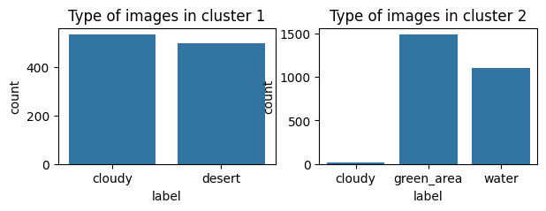
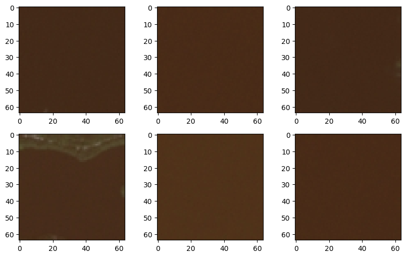
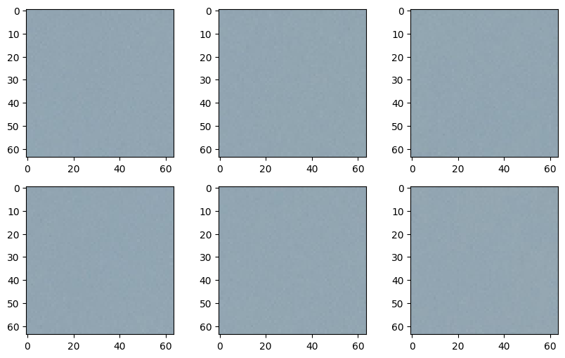
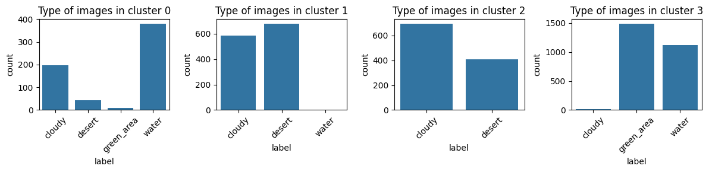

import kagglehub
# Download latest version
path = kagglehub.dataset_download("mahmoudreda55/satellite-image-classification")TP6 - Clustering
Course: Advanced Machine Learning
Lecturer: Sothea HAS, PhD
Objective: Clustering algorithm is an unsuperivsed learning method aiming at grouping data into clusters based on their similarities. In this TP, we will use various clusterint algorithms we have seen to solve some practical tasks such as image and data segmentation.
- The
notebookof thisTPcan be downloaded here: TP6_Clustering.ipynb.
1. Satellite Image Segmentation
A. Assembling data
- Download satellite images from the following kaggle repository: Satellite Images.
- There are four folders of different areas captured by satellite images:
cloudy(\(1500\times 256\times 256\))desert(\(1131\times 256\times 256\))green_area(\(1500\times 64\times 64\))water(\(1500\times 64\times 64\))
- Assemble these four types of images (convert them to \(64\times 64\)-resolution) and save it as
satellite_images.npy. You may find the following libraries useful:cv2globPIL
import cv2
import glob
from PIL import Image
folder_names = ['cloudy', 'desert', 'green_area', 'water']
ext = ['jpg'] # Add image formats here
resized_images = []
for name in ['cloudy', 'desert', 'green_area', 'water']:
imdir = path + '/data/' + name + '/'
files = []
[files.extend(glob.glob(imdir + '*.' + e)) for e in ext]
images = [cv2.imread(file) for file in files]
# Resize images
if images[0].shape[0] == 256:
resized_images.extend([img[::4,::4,:] for img in images])
else:
resized_images.extend(images)
len(resized_images)5631resized_imagespath = "C:/Users/hasso/.cache/kagglehub/datasets/mahmoudreda55/satellite-image-classification/versions/1"
folder_names = ['cloudy', 'desert', 'green_area', 'water']# Save it
import numpy as np
# data = np.array(resized_images)
# np.save(path + '/data/satellite_images.npy', data)
data = np.load(path + '/data/satellite_images.npy')
label = np.repeat(folder_names, (1500, 1131, 1500, 1500))
data.shape(5631, 64, 64, 3)B. Clustering.
- Load the assembled data and perform different clustering algorithms on the data.
- Detect the optimal number of clusters. Is the result reasonable?
- Explore if the clustering algorithms cluster images into their real categories.
import matplotlib.pyplot as plt
import numpy as np
_, axs = plt.subplots(3,4, figsize=(10, 8))
for i in range(12):
ids = np.random.choice(5631,1)
axs[i//4,i%4].imshow(data[ids,:,:,:].reshape(64,64,3))
axs[i//4,i%4].axis('off')
axs[i//4,i%4].set_title(label[ids][0])
plt.show()
data = data.reshape(-1,64*64*3)
data.shape
from sklearn.preprocessing import StandardScaler
sclaer = StandardScaler()
data_scaled = sclaer.fit_transform(data)KMeans algorithm
from sklearn.cluster import KMeans, AgglomerativeClustering, SpectralClustering
k_list = list(range(1,7))
wss = []
sh_avg = []
for k in k_list:
km = KMeans(n_clusters=k)
km = km.fit(data_scaled)
wss.append(km.inertia_)
clusters = km.labels_import pandas as pd
df_wss = pd.DataFrame({
"K": k_list,
"WSS": wss
})
import seaborn as sns
sns.lineplot(df_wss, x="K", y="WSS", markers=True)
plt.scatter(x=df_wss.K, y=df_wss.WSS)
plt.title("WSS as a function number of clusters")
plt.show()
# Let's detect the elbow
dif = np.diff(wss)
id_opt = np.argmax(dif[:-1]/dif[1:]) + 1
print(f'The optimal clsuter is {k_list[id_opt]}')The optimal clsuter is 2Silhouette Score
from sklearn.metrics import silhouette_samples, silhouette_score
km = KMeans(n_clusters=2, max_iter=100, n_init=2)
km = km.fit(data_scaled)
clusters = km.labels_
silhouette_avg = silhouette_score(data_scaled, clusters)
sample_silhouette_values = silhouette_samples(data_scaled, clusters)
# Plot silhouette scores
fig, ax1 = plt.subplots(1, 1, figsize=(6,3))
y_lower = 10
for k in range(km.n_clusters):
ith_cluster_silhouette_values = sample_silhouette_values[clusters == k]
ith_cluster_silhouette_values.sort()
size_cluster_k = ith_cluster_silhouette_values.shape[0]
y_upper = y_lower + size_cluster_k
ax1.fill_betweenx(np.arange(y_lower, y_upper), 0,
ith_cluster_silhouette_values)
ax1.text(-0.05, y_lower + 0.5 * size_cluster_k, str(k+1))
y_lower = y_upper + 10
ax1.set_title("Silhouette coefficients for K=2")
ax1.set_xlabel("Silhouette coefficient values")
ax1.set_ylabel("Cluster label")
ax1.axvline(x=silhouette_avg, color="red", linestyle="--")
plt.show()
- We shall see if \(K=2\) is also an optimal number of cluster based on Silhouette scores:
sh_avg = []
for k in k_list[1:]:
km = KMeans(n_clusters=k)
km = km.fit(data_scaled)
clusters = km.labels_
silh_avg = silhouette_score(data_scaled, clusters)
sh_avg.append(silh_avg)import seaborn as sns
df_wss = pd.DataFrame({
"K": k_list[1:],
"Silhouette Coefficients": sh_avg
})
sns.lineplot(df_wss, x="K", y="Silhouette Coefficients", markers=True)
plt.scatter(x=df_wss.K, y=df_wss['Silhouette Coefficients'])
plt.title("Silhouette Coefficients as a function number of clusters")
plt.show()
Based the above graph, \(K=2\) also maximizes the Silhouette score which suggests that it’s a suitable number of clusters. We can see the distribution of each cluster by analyzing the type of images of each cluster as follows.
_, axs = plt.subplots(1,2, figsize=(7, 2))
df_label = pd.DataFrame({'label': label})
sns.countplot(df_label.loc[clusters == 0], x="label", ax=axs[0])
axs[0].set_title("Type of images in cluster 1")
sns.countplot(df_label.loc[clusters == 1], x="label", ax=axs[1])
axs[1].set_title("Type of images in cluster 2")
plt.show()
Let’s see the water views that are missed grouped with green areas.
_, axs = plt.subplots(2,3, figsize=(10,6))
wrong_1 = data[(km.labels_ == 1) & (label == "water"),:]
for i in range(6):
axs[i//3, i%3].imshow(wrong_1[i,:].reshape(64,64,3))
Here are desert views that were missed clustered with cloudy skies.
_, axs = plt.subplots(2,3, figsize=(10,6))
wrong_1 = data[(km.labels_ == 0) & (label == "desert"),:]
for i in range(6):
axs[i//3, i%3].imshow(wrong_1[i,:].reshape(64,64,3))
- Finally, we can try to cluster them into 4 classes and see if images from the same group would be clustered into the same cluster.
km = KMeans(n_clusters=4)
km = km.fit(data_scaled)
clusters = km.labels_
_, axs = plt.subplots(1,4, figsize=(12, 3))
df_label = pd.DataFrame({'label': label})
for i, cl in enumerate(range(4)):
sns.countplot(df_label.loc[clusters == i], x="label", ax=axs[i])
axs[i].set_title(f"Type of images in cluster {i}")
axs[i].tick_params(axis='x', labelrotation = 45)
plt.tight_layout()
plt.show()
It’s clear that KMeans does not cluster data into their real types.
C. Predictive Models
- Create a target of four categories \(y=\) [‘cloudy’, ‘desert’, ‘forest’, ‘water’].
- Randomly select 10% from of each category and store them as test data.
- Train ML models to predict the category of images.
- Report the accuracy of the models.
# Train-test split
from sklearn.model_selection import train_test_split, GridSearchCV
X_train, X_test, y_train, y_test = train_test_split(data.reshape(data.shape[0], -1)/np.max(data), label,test_size=0.1, random_state=42)
print(X_train.shape)(5067, 12288)We will explore some models including
- KNN
- Random Forest
- Extra-trees
- DNN
# KNN
from sklearn.neighbors import KNeighborsClassifier
param = {
"n_neighbors": np.arange(100,151, 5, dtype=int)
}
knn = KNeighborsClassifier()
grid_cv = GridSearchCV(knn, param, cv=10, scoring="neg_log_loss")
grid_cv = grid_cv.fit(X_train, y_train)
print(f'Optimal number of cluster: {grid_cv.best_params_}')
y_hat = grid_cv.best_estimator_.predict(X_test)
print(f'Test accuracy: {np.mean(y_test == y_hat)}')
df_acc = pd.DataFrame({
str(grid_cv.best_params_['n_neighbors'])+"NN": [np.mean(y_test == y_hat)]
}, index=["Accuracy"])
df_accOptimal number of cluster: {'n_neighbors': 125}
Test accuracy: 0.900709219858156| 125NN | |
|---|---|
| Accuracy | 0.900709 |
# Random Forest & Extra-trees
from sklearn.ensemble import RandomForestClassifier, ExtraTreesClassifier
param = {
"n_estimators": [100, 300, 500],
"max_features": [40, 50, 70, 100],
"min_samples_leaf": [5, 10, 20, 30,50]
}
# mask = np.random.choice([True, False], replace=True, p=[0.1, 0.99], size=len(y_train))
rf = RandomForestClassifier()
grid_cv = GridSearchCV(rf, param, cv=10, scoring="neg_log_loss")
grid_cv = grid_cv.fit(X_train, y_train)
print(f'Optimal parameters: {grid_cv.best_params_}')
y_hat = grid_cv.best_estimator_.predict(X_test)
print(f'Test accuracy: {np.mean(y_test == y_hat)}')
df_acc = pd.concat([df_acc, pd.DataFrame({
"RF": [np.mean(y_test == y_hat)]
}, index=["Accuracy"])], axis=1)
df_accOptimal parameters: {'max_features': 50, 'min_samples_leaf': 30, 'n_estimators': 100}
Test accuracy: 0.9148936170212766| 125NN | RF | |
|---|---|---|
| Accuracy | 0.900709 | 0.914894 |
# Extra-trees
# mask = np.random.choice([True, False], replace=True, p=[0.01, 0.99], size=len(y_train))
ex_tr = ExtraTreesClassifier()
grid_cv = GridSearchCV(ex_tr, param, cv=10, scoring="neg_log_loss")
grid_cv = grid_cv.fit(X_train, y_train)
print(f'Optimal parameters: {grid_cv.best_params_}')
y_hat = grid_cv.best_estimator_.predict(X_test)
print(f'Test accuracy: {np.mean(y_test == y_hat)}')
df_acc = pd.concat([df_acc, pd.DataFrame({
"Ex-trees": [np.mean(y_test == y_hat)]
}, index=["Accuracy"])], axis=1)
df_accOptimal parameters: {'max_features': 50, 'min_samples_leaf': 30, 'n_estimators': 100}
Test accuracy: 0.9131205673758865| 125NN | RF | Ex-trees | |
|---|---|---|---|
| Accuracy | 0.900709 | 0.914894 | 0.913121 |
# XGboost
from xgboost import XGBClassifier
from sklearn.preprocessing import LabelEncoder
from sklearn.metrics import log_loss
from sklearn.model_selection import KFold
from itertools import product
param_grid = {
'colsample_bytree': [0.2, 0.5, 0.8],
'max_depth': [10, 15, 20],
'n_estimators': [200, 500]
}
label_encoder = LabelEncoder()
y_train_encoded = label_encoder.fit_transform(y_train)
y_test_encoded = label_encoder.transform(y_test)
n_cv = 5
kf = KFold(n_splits=n_cv, shuffle=True, random_state=42)
xgb = XGBClassifier(objective="log_loss")
# Perform parameter search manually
list_params = list(product(*param_grid.values()))
loss_cv = np.zeros(shape=(len(list_params),))
j = 1
for train_index, test_index in kf.split(X_train):
X_tr, X_te = X_train[train_index,:], X_train[test_index,:]
y_tr, y_te = y_train_encoded[train_index], y_train_encoded[test_index]
loss_ = np.zeros(shape=(len(list_params),))
for i,params in enumerate(list_params):
param_dict = dict(zip(param_grid.keys(), params))
model = XGBClassifier(**param_dict)
model.fit(X_tr, y_tr)
y_pred = model.predict(X_te)
loss = np.mean(y_pred == y_te)
loss_[i] = loss
loss_cv = loss_cv + loss_
print(f"* Fold: {j} / {n_cv}")
j += 1loss_cv /= n_cv
opt_param = dict(zip(param_grid.keys(), list_params[np.argmin(loss_cv)]))
print(opt_param)
model = XGBClassifier(**opt_param)
model = model.fit(X_train.to_numpy(), y_train_encoded)
y_pred_xgb_cv = model.predict(X_test.to_numpy())
print(f"Accuracy: {np.mean(y_test_encoded == y_hat)}")
y_hat = model.predict(X_test)
df_acc = pd.concat([df_acc, pd.DataFrame({
"XGboost": [np.mean(y_test_encoded == y_hat)]
}, index=["Accuracy"])], axis=1)DNN model
# This is an example with Keras
from sklearn.metrics import mean_squared_error
from keras.models import Sequential
from keras.layers import Dense, Input, Dropout
from keras.utils import to_categorical
from sklearn.preprocessing import LabelEncoder, OneHotEncoder
onehot = OneHotEncoder()
y_train_encoded = onehot.fit_transform(y_train.reshape(-1,1)).toarray()
y_test_encoded = onehot.transform(y_test.reshape(-1,1)).toarray()
from keras.callbacks import Callback
# Input
d = X_train.shape[1]
model = Sequential()
model.add(Input(shape=(d,)))
# To do
model.add(Dense(128, activation="relu"))
model.add(Dense(64, activation="relu"))
model.add(Dropout(0.2))
model.add(Dense(32, activation="relu"))
model.add(Dropout(0.2))
model.add(Dense(4, activation="softmax"))
model.compile(optimizer='adam', loss='categorical_crossentropy', metrics=['accuracy'])
# I only print every N epochs
class custom_callback(Callback):
def __init__(self, N):
super(custom_callback, self).__init__()
self.N = N
def on_epoch_end(self, epoch, logs=None):
if (epoch + 1) % self.N == 0:
print(f'Epoch {epoch + 1}: loss = {logs["loss"]}, accuracy = {logs["accuracy"]}')
print_callback = custom_callback(200)
history = model.fit(X_train, y_train_encoded, epochs=1000, batch_size=256, validation_split=0.1, verbose=0, callbacks=[print_callback])
train_loss = history.history['loss']
val_loss = history.history['val_loss']Epoch 200: loss = 0.273344486951828, accuracy = 0.8901315927505493
Epoch 400: loss = 0.23533892631530762, accuracy = 0.9059210419654846
Epoch 600: loss = 0.1987672746181488, accuracy = 0.9179824590682983
Epoch 800: loss = 0.17246949672698975, accuracy = 0.9344298243522644
Epoch 1000: loss = 0.15364068746566772, accuracy = 0.9445175528526306import plotly.graph_objs as go
# Plot the learning curves
epochs = list(range(1, len(train_loss) + 1))
fig1 = go.Figure(go.Scatter(x=epochs, y=train_loss, name="Training loss"))
fig1.add_trace(go.Scatter(x=epochs, y=val_loss, name="Training loss"))
fig1.update_layout(title="Training and Validation Loss",
width=800, height=500,
xaxis=dict(title="Epoch", type="log"),
yaxis=dict(title="Loss"))
fig1.show()Unable to display output for mime type(s): application/vnd.plotly.v1+jsony_hat = model.predict(X_test).argmax(axis=1)
y_test_reverse = np.argmax(y_test_encoded, axis=1)
test_acc = np.mean(y_hat == y_test_reverse)
print(f"Accuracy: {test_acc}")18/18 ━━━━━━━━━━━━━━━━━━━━ 0s 14ms/step
Accuracy: 0.9184397163120568df_acc = pd.concat([df_acc, pd.DataFrame({
"DNN": [test_acc]
}, index=["Accuracy"])], axis=1)df_acc| 125NN | RF | Ext-trees | DNN | |
|---|---|---|---|---|
| Accuracy | 0.900709 | 0.914894 | 0.913121 | 0.91844 |
2. Revisit Spam dataset
Task: Perform clustering algorithms on Spam dataset. Can clustering algorithms distinguish spam and non-spam emails based on it characteristics.
import pandas as pd
path = "https://raw.githubusercontent.com/hassothea/MLcourses/main/data/spam.txt"
data = pd.read_csv(path, sep=" ")
data.head(5)| Id | make | address | all | num3d | our | over | remove | internet | order | ... | charSemicolon | charRoundbracket | charSquarebracket | charExclamation | charDollar | charHash | capitalAve | capitalLong | capitalTotal | type | |
|---|---|---|---|---|---|---|---|---|---|---|---|---|---|---|---|---|---|---|---|---|---|
| 0 | 1 | 0.00 | 0.64 | 0.64 | 0.0 | 0.32 | 0.00 | 0.00 | 0.00 | 0.00 | ... | 0.00 | 0.000 | 0.0 | 0.778 | 0.000 | 0.000 | 3.756 | 61 | 278 | spam |
| 1 | 2 | 0.21 | 0.28 | 0.50 | 0.0 | 0.14 | 0.28 | 0.21 | 0.07 | 0.00 | ... | 0.00 | 0.132 | 0.0 | 0.372 | 0.180 | 0.048 | 5.114 | 101 | 1028 | spam |
| 2 | 3 | 0.06 | 0.00 | 0.71 | 0.0 | 1.23 | 0.19 | 0.19 | 0.12 | 0.64 | ... | 0.01 | 0.143 | 0.0 | 0.276 | 0.184 | 0.010 | 9.821 | 485 | 2259 | spam |
| 3 | 4 | 0.00 | 0.00 | 0.00 | 0.0 | 0.63 | 0.00 | 0.31 | 0.63 | 0.31 | ... | 0.00 | 0.137 | 0.0 | 0.137 | 0.000 | 0.000 | 3.537 | 40 | 191 | spam |
| 4 | 5 | 0.00 | 0.00 | 0.00 | 0.0 | 0.63 | 0.00 | 0.31 | 0.63 | 0.31 | ... | 0.00 | 0.135 | 0.0 | 0.135 | 0.000 | 0.000 | 3.537 | 40 | 191 | spam |
5 rows × 59 columns
References
\(^{\text{📚}}\) Bagging predictors, Breiman (1996).
\(^{\text{📚}}\) The strength of weak learnability, Robert E. Schapire (1990)..
\(^{\text{📚}}\) COBRA: A combined regression strategy, Beau et al. (2016).
\(^{\text{📚}}\) Gradient COBRA: A kernel-based consensual aggregation for regression, Has (2023).
\(^{\text{📚}}\) Aggregation using input–output trade-off, Fischer & Mougeot (2019).
\(^{\text{📚}}\) Super Learner, M. J. Van der Laan (2007).